Skyline Residences: a ₪10 million media plan to sell 100 luxury apartments in Tel Aviv
A six-month media plan for the launch of an ultra-premium residential complex in the heart of Tel Aviv: market analysis, objectives with numbers, a high-net-worth audience both local and from the diaspora, a phased media mix with its budget, creative pieces for each channel and an evaluation system. The project and the brand are hypothetical; the market and media data are real.
The brief
Skyline Residences is a luxury residential complex with views of the Mediterranean, in the center of Tel Aviv: sustainable architecture, elite design, smart home. The plan had to cover six months with a ₪10 million budget and three outcomes: brand prestige, 500 qualified leads in the first three months and the sale of 100 units in six months. In a market where luxury apartments go from ₪7.1 million for 83 m² to US$12 million for a mini penthouse, Skyline sits above: from US$40,000 to 70,000 per square meter depending on the floor and the view.
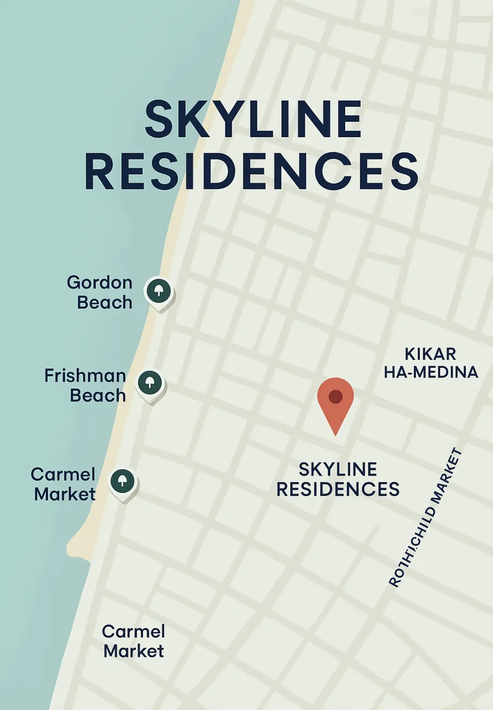
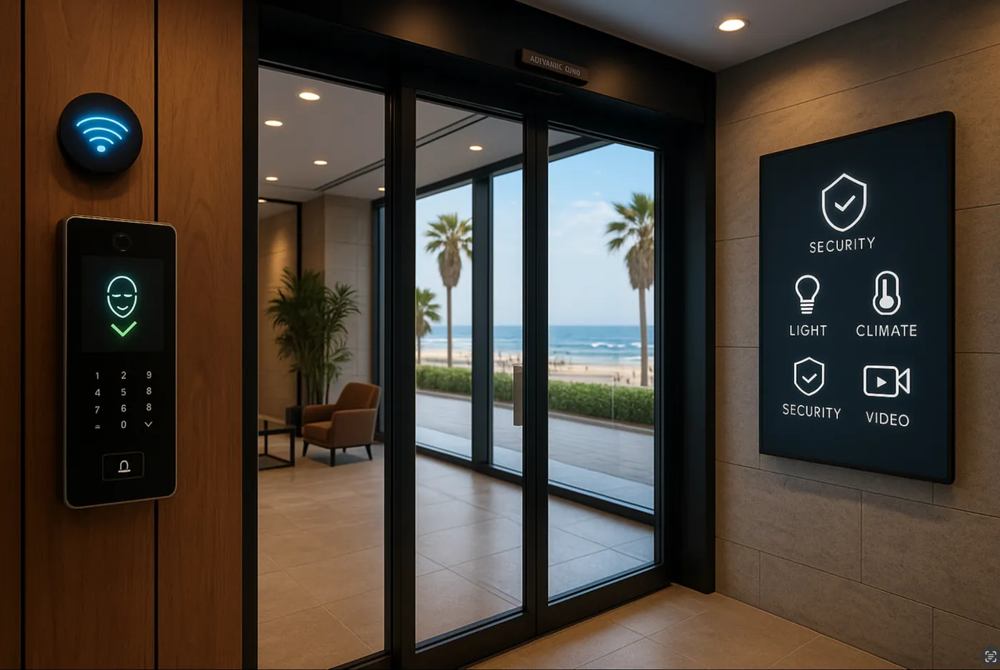
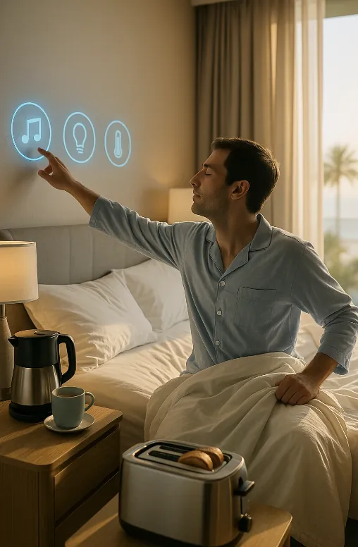
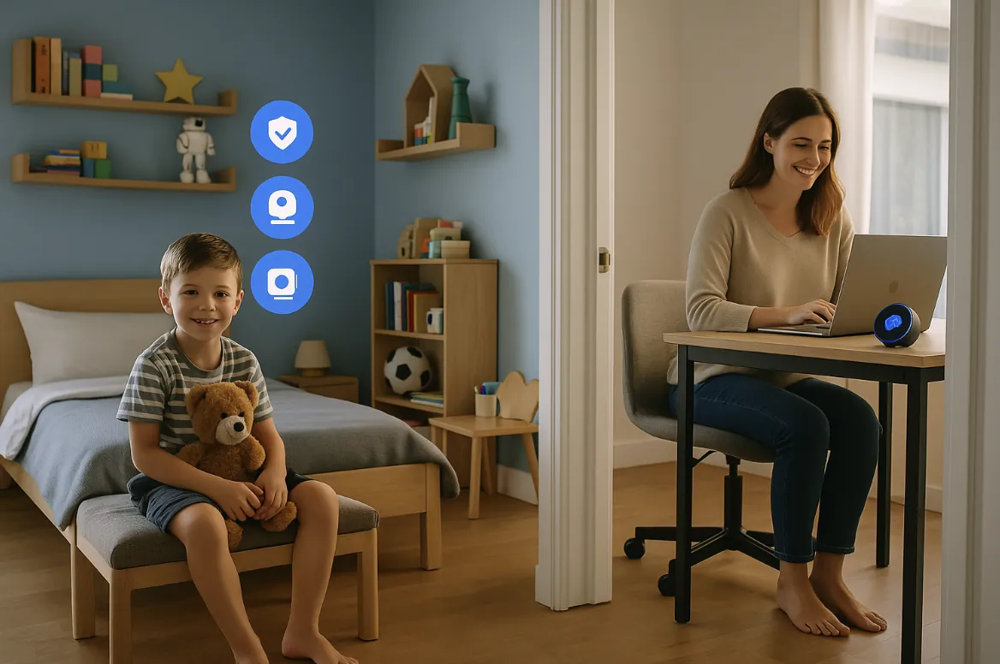
Swipe sideways or use the arrows. Tap a screenshot to enlarge it.
The market: high demand, little supply and a luxury paradox
Tel Aviv is the eighth most expensive place in the world to buy a home. Demand exceeds supply, but many new apartments remain unsold because construction costs doubled to ₪25,000 per square meter and new costs more than second-hand. A project in Sde Dov sold well at a price 35% below expectations: perceived value sells, not the “luxury” label. Add to that VAT rising from 17 to 18%, an extra 2% tax on capital gains and a new brokers’ regulation (since 2025) that requires the license number on every ad and the owner’s consent. The opportunities: about 40% of buyers are expats, many from the Jewish diaspora in the US, UK and Europe; the tech industry brings high-income professionals; staged homes sell 47% faster and 12% higher; and mortgages are easing.
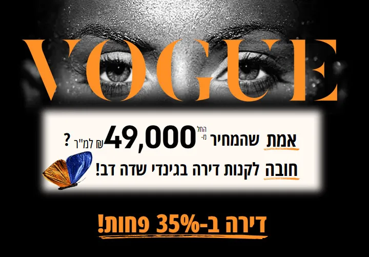
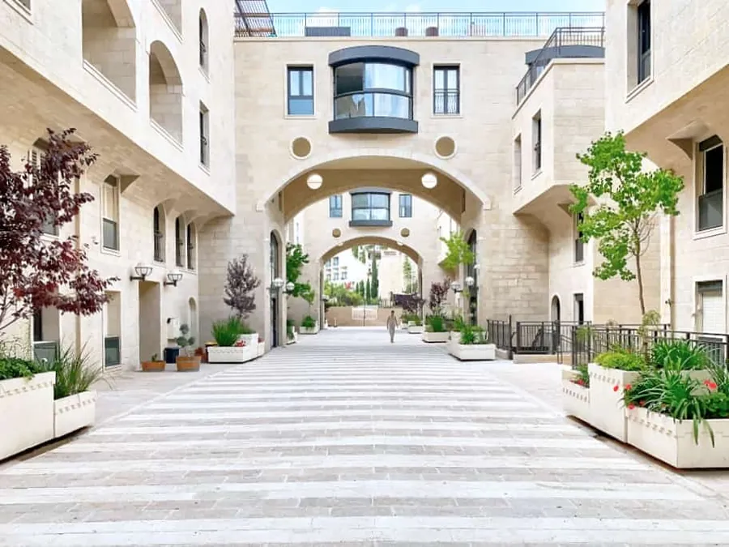
Swipe sideways or use the arrows. Tap a screenshot to enlarge it.
Objectives with numbers
| Goal | Target | How it is measured |
|---|---|---|
| Brand awareness | High visibility in 6 months | Unaided recall 30% and aided recall 60% in a post-campaign survey; 150,000 unique visitors; 5 million impressions and 100,000 people reached on social media |
| Lead generation | 500 qualified leads in 3 months | Cost per qualified lead of ₪10,000 or less; 50% of leads visit the showroom |
| Sales | 100 units in 6 months | 20% conversion from qualified lead to sale; average price of ₪7 to 12 million |
| Reach and frequency | Effective penetration | 70% reach of the target audience; effective frequency of 7 to 10 exposures; between 490 and 700 GRPs |
| Digital engagement | Deep interest | More than 3 minutes on the site and 4 pages per session; 3% engagement on social media; 500,000 views of the video tours; 70% completion of the 3D tours |
| Digital conversion | Efficient response | CTR of 0.8% on display and 2.5% on search; 5% conversion from visitor to inquiry |
A qualified lead here is not a form: it is someone with demonstrated intent, financial capacity and affinity with what the project promises. And awareness and sales are not separate objectives: without prestige, leads arrive less serious and the cost per lead rises. That is why the early phases invest in the brand.
The audience: digital first, validated in print
People aged 40 to 55 at the peak of their careers or with accumulated wealth: executives, investors, entrepreneurs; high and ultra-high net worth. Core in Tel Aviv and Gush Dan, plus the diaspora in London, New York and Paris. They seek exclusivity, privacy and an “experiential” life rather than square meters, and they value innovation. Their media: 90% start the property search online and 78% of those under 50 discover properties on Instagram; in the 40-to-55 bracket, 81% use Facebook and 62% Instagram, and 72% watch television daily. Then they validate in print: Robb Report, Haute Living, Architecture of Israel, the real estate supplements of Globes, Calcalist and Israel Hayom. Classical and culture radio, billboards on the Ayalon Highway (750,000 vehicles a day), Ben Gurion Airport and the Diamond Exchange district. And a trust economy: design and finance creators with real credibility, not followers.
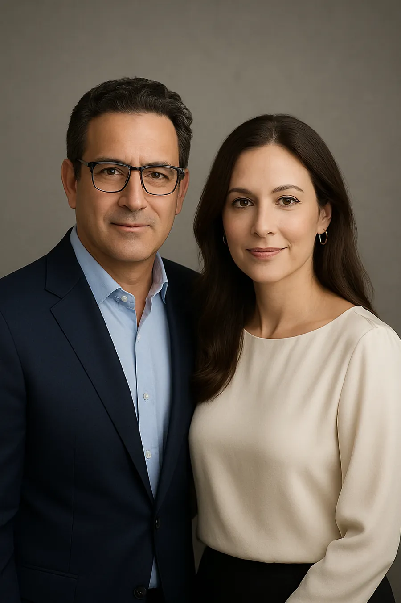
A day with them
- 7:00Globes on the tablet, over coffee: a Skyline ad about investment value and lifestyle; on the speaker, a sober spot on Kan Kol Hamusica.
- 9:00On the way to the office in Ramat Gan, the Ayalon billboard with the panoramic view of the Mediterranean.
- 12:00On LinkedIn, a sponsored post by a finance creator about smart investments in Tel Aviv; in the lounge, a print ad in a design magazine.
- 15:00A luxury real estate portal sends the new listings: Skyline with its 4K tour.
- 19:00After dinner, the 30-second commercial in prime time on Keshet 12 or Israel+.
- 21:00On Instagram, an interior designer’s reel and the retargeting that recalls the morning’s visit to the site.
The mix and the budget
| Channel | Budget | What it measures |
|---|---|---|
| Digital (search, display, social, 3D and VR tours) | ₪4,000,000 · 40 % | Cost per click and per lead; qualified leads |
| Out of home (billboards, transit, high-traffic areas) | ₪3,000,000 · 30 % | Cost per thousand and reach |
| Events and showroom | ₪2,000,000 · 20 % | Lead-to-visit conversion; VIP attendance |
| PR and content | ₪1,000,000 · 10 % | Awareness and brand storytelling |
Each channel is judged by the metric that fits it: CPM for reach, CPC for traffic, CPL for leads (capped at ₪10,000), CPA for sales and CPP for television and radio. An example from the plan: a 30-second spot costing ₪100,000 that delivers 2 GRPs costs ₪50,000 per point; that is how programs and time slots are compared. Television gets a tentative ₪2.5 million, concentrated in Keshet 12 prime time and on Israel+, the channel that connects the diaspora with English-subtitled content.
Three phases in six months
Months 1 and 2, intrigue. A question instead of an argument: “How high are you ready to take your life?”, playing with the height of life, of the towers and of the experience. High-impact ads in architecture magazines, reels on the developer’s accounts and billboards on the Ayalon.
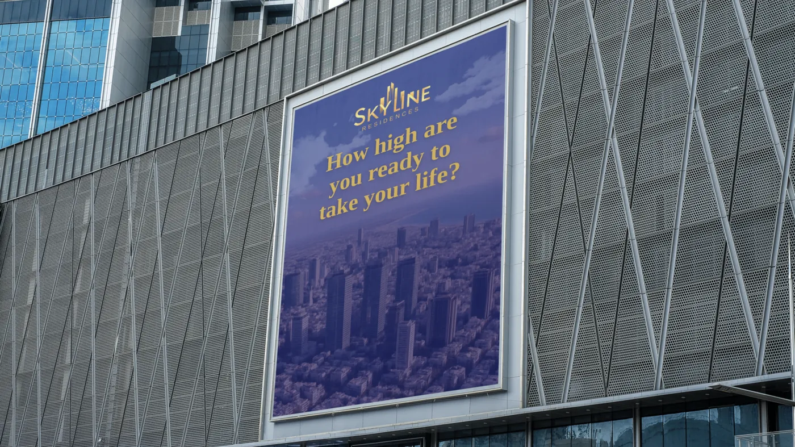
Months 3 and 4, launch and leads. The message becomes direct: “Live in the home of tomorrow. More than you dreamed. Exactly what you deserve”. Television commercials, billboards on the Ayalon, in north Tel Aviv and in the Diamond Exchange district, full pages and advertorials in Globes, Calcalist and Haaretz, a sponsored article on construction and innovation that ends in a form, paid campaigns on LinkedIn, Instagram and Facebook, and collaborations with architects.
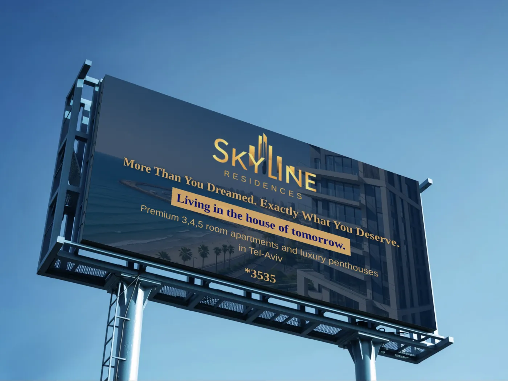
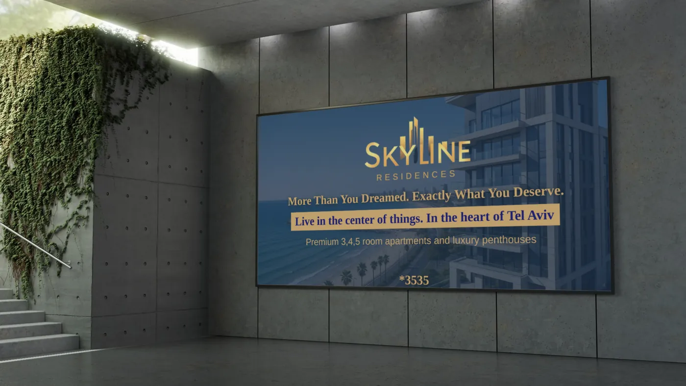
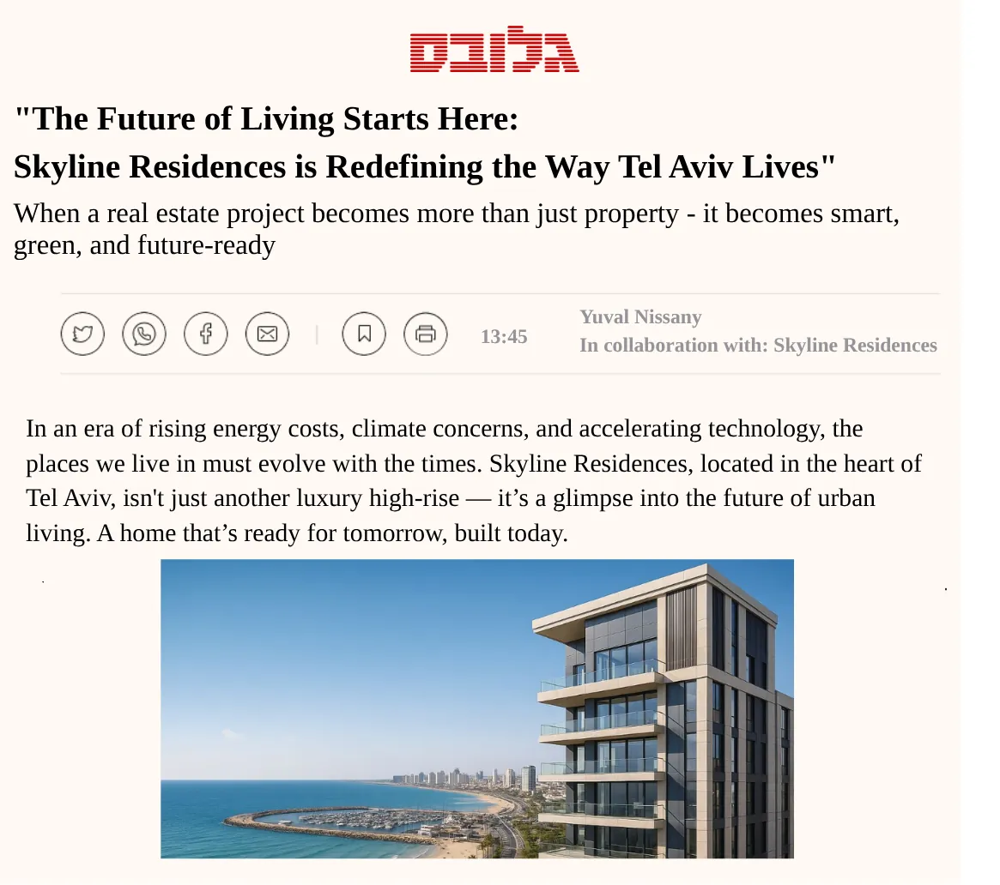
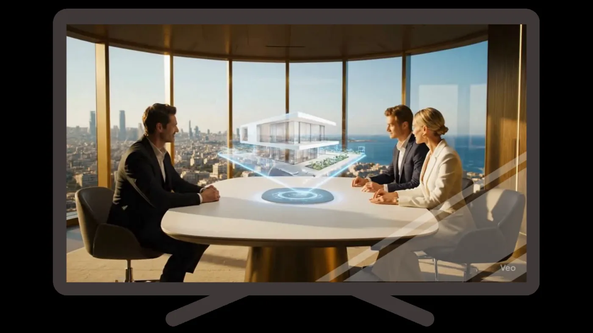
Swipe sideways or use the arrows. Tap a screenshot to enlarge it.
Months 5 and 6, follow-up and closing. Retargeting those who visited the site without inquiring, personalized emails, private showroom visits, exclusive on-site days with limited-time purchase incentives, and the trusted creators keeping the conversation going. The logic: the luxury buyer decides slowly, so presence has to be constant and every contact personal.
Creative and the rules of the game
Professional photography, 4K video and drone footage (ads with professional visuals get three times more inquiries), lifestyle storytelling over square meters, a palette of gold, deep blue and white, and a mature, slightly formal tone. And Israel’s 2025 rules for brokers: license number on every ad, owner’s consent, transparency, no legal services. In print, full and double pages in premium positions, with low but constant frequency; a page in Yedioth Ahronoth costs between ₪50,000 and 120,000, in Israel Hayom between 20,000 and 25,000. On television, 60-second spots for the launch, 30 for the awareness phase and 15 to remind, on Keshet 12, Kan 11, Israel+ and Screen iL.
How to know whether it works
Beyond the KPIs per objective, the plan measures attention and not just visibility (an ad 50% in view for 2 seconds; more than 2 seconds of active attention for a luxury message), uses planning and monitoring tools (GWI and TGI for the audience, Kantar and Similarweb for competition, Nielsen, Comscore and Google Marketing Platform to measure, Mediaocean to buy, Sprinklr for social sentiment, and Yifat for advertising spend in Israel), multi-touch attribution and media mix modeling. And a list of red flags: VIP attendance below 70%, cost per lead above ₪10,000, CTR below benchmark, under 2 minutes on the site, under 50% video completion, under 40% of leads reaching the showroom, negative sentiment, frequency below 7.
What I took away
That a media plan is a chain of numbers that hold each other up: the budget per channel justifies the metric, the metric justifies the phase, and the phase justifies the piece. And that in luxury the first investment is in prestige, because that is where the quality of every lead comes from.